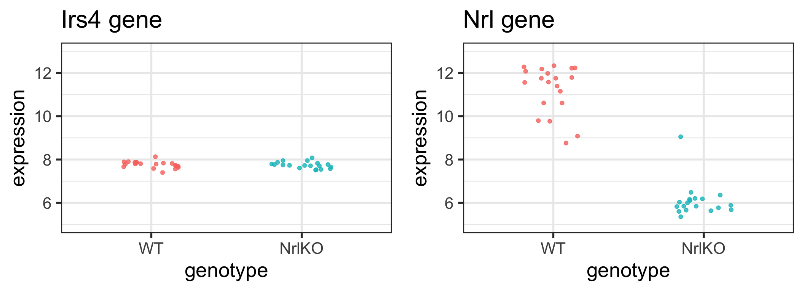
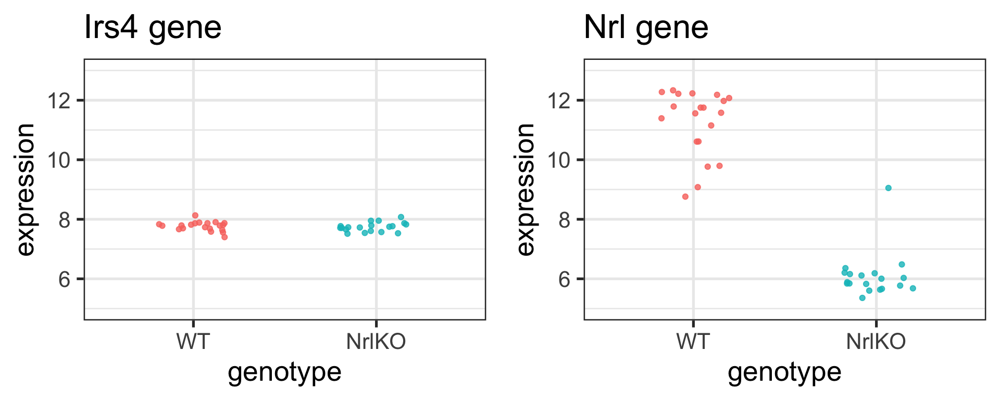
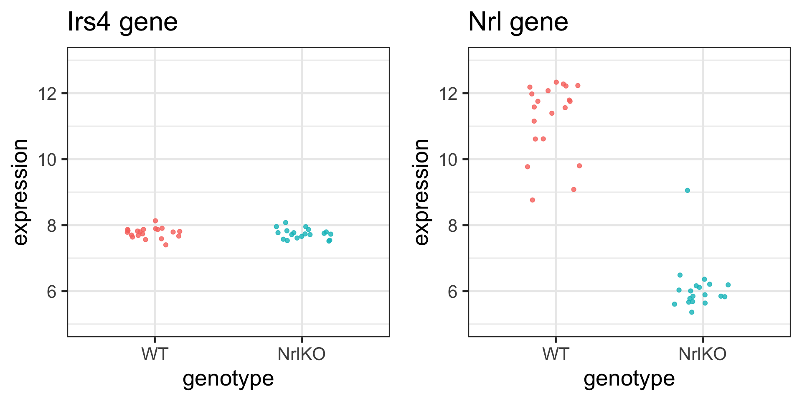

Two Sample t-test
data: expression by genotype
t = 0.52854, df = 37, p-value = 0.6003
alternative hypothesis: true difference in means between group WT and group NrlKO is not equal to 0
95 percent confidence interval:
-0.07384018 0.12595821
sample estimates:
mean in group WT mean in group NrlKO
7.765671 7.739612 Linear models and ANOVA
Keegan Korthauer
January 23, 2025
Recap: Are these genes different in NrlKO vs WT?
H0: the expression level of gene \(g\) is the same in both genotypes
Is there enough evidence in the data to reject H0?
Learn about a population from a random sample
Population (Unknown) \[Y \sim F, \,\, Z \sim G\] \[E[Y] = \mu_Y, \,\, E[Z] = \mu_Z\] \[Var[Y] = {\sigma}_Y^2,\,\, Var[Z] = {\sigma}_Z^2\] \[H_0: \mu_Y = \mu_Z\]
\[H_A: \mu_Y \neq \mu_Z\]
Review:
Which quantities on this slide are statistics and which are parameters?
Sample (Observed, with randomness)
\[(Y_1, Y_2, ..., Y_{n_Y}) \text{ and } (Z_1, Z_2, ..., Z_{n_Z})\] \[\hat{\mu}_Y = \bar{Y} = \frac{\sum_{i=1}^{n_Y} Y_i}{n_Y}\]
\[\hat{\sigma}_Y^2 = S_Y^2=\frac{1}{n_Y-1}\sum_{i=1}^{n_Y}(Y_i-\bar{Y})^2\]
(with similar quantities for \(Z:\) \(\bar{Z}\) and \(S^2_Z)\)
\[T = \frac{\bar{Y}-\bar{Z}}{\sqrt{\hat{Var}(\bar{Y}-\bar{Z}))}}\]
Summary: Hypothesis testing
Formulate scientific hypothesis as a statistical hypothesis \((H_0 \text{ vs } H_A)\)
Choose a test statistic to test \(H_0\) and compute its observed value. For example:
- 2-sample t-test
- Welch’s t-test (unequal variance)
- Wilcoxon rank-sum test
- Kolmogorov-Smirnov test
- Compute the probability of seeing a test statistic as extreme as that observed, under the null sampling distribution (p-value)
- Make a decision about the significance of the results, based on a pre-specified significance level ( \(\alpha\) )
We can run these tests in R
Example: use the t.test function to test H0 using a 2-sample t-test with equal variance:
Discussion - choice and interpretation of hypothesis tests
If more than one test is appropriate (e.g. t-test, Wilcoxon, and KS), which should I choose?
What should I do if several tests (e.g. t-test, Wilcoxon, KS) give very different answers?
What is generally more important for results interpretation: the effect size or the p-value?
Key question
Why should I bother with the assumptions of the t-test, which aren’t necessary for the Wilcoxon or KS?
Today’s Learning Objectives
Compare means of different groups (2 or more) using a linear regression model
Write a linear model using matrix notation and understand which matrix is built by R
Use ‘indicator’ variables to represent the levels of a qualitative explanatory variable
Distinguish between single and joint hypothesis tests (e.g. \(t\)-tests vs \(F\)-tests)
3 ways to test H0: \(\mu_1 = \mu_2\)
2-sample t-test (with equal variance)
Two Sample t-test
data: expression by genotype
t = 0.52854, df = 37, p-value = 0.6003
alternative hypothesis: true difference in means between group WT and group NrlKO is not equal to 0
95 percent confidence interval:
-0.07384018 0.12595821
sample estimates:
mean in group WT mean in group NrlKO
7.765671 7.739612 (One-way) Analysis of Variance (ANOVA)
Linear Regression1
Call:
lm(formula = expression ~ genotype, data = .)
Residuals:
Min 1Q Median 3Q Max
-0.36553 -0.09067 0.01724 0.09396 0.36496
Coefficients:
Estimate Std. Error t value Pr(>|t|)
(Intercept) 7.76567 0.03441 225.659 <2e-16 ***
genotypeNrlKO -0.02606 0.04930 -0.529 0.6
---
Signif. codes: 0 '***' 0.001 '**' 0.01 '*' 0.05 '.' 0.1 ' ' 1
Residual standard error: 0.1539 on 37 degrees of freedom
Multiple R-squared: 0.007494, Adjusted R-squared: -0.01933
F-statistic: 0.2794 on 1 and 37 DF, p-value: 0.6003These are not coincidences!
2-sample t-test (with equal variance)
$`t statistic`
t
0.5285386
$`p-value`
[1] 0.6002819
$`mean difference`
[1] 0.02605902
$`(t statistic)^2`
t
0.279353 (One-way) Analysis of Variance (ANOVA)1
$`F statistic`
[1] 0.279353
$`p-value`
[1] 0.6002819Linear Regression
$`t statistic`
[1] -0.5285386
$`p-value`
[1] 0.6002819
$`coefficient estimate`
[1] -0.02605902Key Question
Why are these giving us the same results?
t-test vs linear regression: where’s the line1?

Key Question
Why can we run a t-test with a linear regression model?
From t-test to linear regression
Let’s change the notation to give a common framework to all methods
\[Y \sim G; \; E[Y] = \mu_Y\]\[Y = \mu_Y + \varepsilon_Y; \; \varepsilon_Y \sim G; \; E[\varepsilon_Y] = 0\]
Why is this equivalent?
\[E[Y] = E[\mu_Y + \varepsilon_Y] = \mu_Y + E[\varepsilon_Y] = \mu_Y\] We are just rewriting \(Y\) here
From t-test to linear regression
Let’s change the notation to give a common framework to all methods
\[Y \sim G; \; E[Y] = \mu_Y\]\[Y = \mu_Y + \varepsilon_Y; \; \varepsilon_Y \sim G; \; E[\varepsilon_Y] = 0\]
We can use indices to accommodate multiple groups, i.e.,
\[Y_{ij} = \mu_j + \varepsilon_{ij};\; \; \varepsilon_{ij} \sim G_j; \; \;E[\varepsilon_{ij}] = 0;\]
where \(j = \textrm{\{WT, NrlKO}\}\) (or \(j=\textrm{\{1, 2}\}\) ) identifies the groups; and \(i=1, \ldots, n_j\) identifies the observations within each group
For example: \(Y_{11}\) is the first observation in group 1 or WT
This is called the cell-means model
Using data from the model
\[Y_{ij} = \mu_j + \varepsilon_{ij};\; \; \varepsilon_{ij} \sim G; \; \;E[\varepsilon_{ij}] = 0;\]
where \(j\) indexes groups (e.g. WT vs NrlKO) and \(i\) indexes samples within group, the goal is to test \(H_0 : \mu_1 = \mu_2\)
Note
In the cell-means model parameterization, we have a parameter \(E[Y_{ij}] = \mu_j\) that represents the population mean of each group (in our example: genotype)
Important
We assume a common distribution \(G\) for all groups (equal variance assumption)
Why the name? ‘Cell’ here refers to a cell of a table - e.g. make a table of means by group, and \(\mu_j\) represents the population value for each cell \(j\) in the table
Recall: sample mean estimator of population mean
For each group \(j\), the population mean is given by \(E[Y_{ij}] = \mu_j\)
A natural estimator of the population mean \(\mu_j\) is the sample mean \(\hat{\mu}_j = \bar{Y_j} = \frac{\sum_{i=1}^{n_j}Y_{ij}}{n_j}\)
Recall that the
t.testfunction calculates these for us in R
But why does the lm function report different estimates?
# t.test
filter(twoGenes, gene == "Irs4") %>%
t.test(expression ~ genotype, data = ., var.equal = TRUE)
Two Sample t-test
data: expression by genotype
t = 0.52854, df = 37, p-value = 0.6003
alternative hypothesis: true difference in means between group WT and group NrlKO is not equal to 0
95 percent confidence interval:
-0.07384018 0.12595821
sample estimates:
mean in group WT mean in group NrlKO
7.765671 7.739612
Call:
lm(formula = expression ~ genotype, data = .)
Residuals:
Min 1Q Median 3Q Max
-0.36553 -0.09067 0.01724 0.09396 0.36496
Coefficients:
Estimate Std. Error t value Pr(>|t|)
(Intercept) 7.76567 0.03441 225.659 <2e-16 ***
genotypeNrlKO -0.02606 0.04930 -0.529 0.6
---
Signif. codes: 0 '***' 0.001 '**' 0.01 '*' 0.05 '.' 0.1 ' ' 1
Residual standard error: 0.1539 on 37 degrees of freedom
Multiple R-squared: 0.007494, Adjusted R-squared: -0.01933
F-statistic: 0.2794 on 1 and 37 DF, p-value: 0.6003(Intercept)estimate fromlmis the sample mean of WT groupgenotypeNrlKOestimate fromlmis not the sample mean of the NrlKO group… what is it?
Parameterization: how to write the model?
By default, the
lmfunction does not use the cell-means parameterizationUsually, the goal is to compare the means, not to study each in isolation
Let’s let \(\theta = \mu_1\) and rewrite \(\mu_j = \theta + \tau_j\), and plug into cell-means \((\mu_j)\) model: \[Y_{ij} = \mu_j + \varepsilon_{ij};\; \; \varepsilon_{ij} \sim G; \; \;E[\varepsilon_{ij}] = 0;\]
This gives us the reference-treatment effect \((\theta,\tau_j)\) model: \[Y_{ij} = \theta+\tau_j + \varepsilon_{ij};\; \; \tau_1=0, \; \; \varepsilon_{ij} \sim G; \; \;E[\varepsilon_{ij}] = 0;\]
Reference-treatment effect parameterization
Reference-treatment effect \((\theta,\tau_j)\) model: \[Y_{ij} = \theta+\tau_j + \varepsilon_{ij};\; \; \tau_1=0, \; \; \varepsilon_{ij} \sim G; \; \;E[\varepsilon_{ij}] = 0;\]
Note that for each group, the population mean is given by \(E[Y_{ij}] = \theta+\tau_j=\mu_j,\) and \(\tau_2=\mu_2-\mu_1=E[Y_{i2}] -E[Y_{i1}]\) compares the means
\(\tau_1\) must be set to zero, since group 1 is the reference group
Note
In the reference-treatment effect model parameterization, we have the following parameters:
- \(\theta\) represents the population mean of the reference group (in our example: WT)
- \(\tau_j\) represents the difference in the population mean of group \(j\) compared to the reference (in our example: NrlKO - WT)
Relationship between parameterizations

lm output
- the sample mean of the WT group (reference): \(\hat\theta\)
- the difference in sample mean of NrlKO and WT groups (treatment effect): \(\hat\tau_2\)
Code
# A tibble: 1 × 3
WT NrlKO diffExp
<dbl> <dbl> <dbl>
1 7.77 7.74 -0.0261# A tibble: 2 × 5
term estimate std.error statistic p.value
<chr> <dbl> <dbl> <dbl> <dbl>
1 (Intercept) 7.77 0.0344 226. 1.10e-59
2 genotypeNrlKO -0.0261 0.0493 -0.529 6.00e- 1Code
# A tibble: 1 × 3
WT NrlKO diffExp
<dbl> <dbl> <dbl>
1 11.2 6.09 -5.15# A tibble: 2 × 5
term estimate std.error statistic p.value
<chr> <dbl> <dbl> <dbl> <dbl>
1 (Intercept) 11.2 0.214 52.5 2.39e-36
2 genotypeNrlKO -5.15 0.307 -16.8 6.73e-19We still haven’t answered our question… where’s the line??
\[Y_{ij} = \theta+\tau_j + \varepsilon_{ij};\; \; \tau_1=0, \; \; \varepsilon_{ij} \sim G; \; \;E[\varepsilon_{ij}] = 0;\]
Indicator variables
Let’s re-write our model using indicator (aka ‘dummy’) variables:
\[Y_{ij} = \theta+\tau_j + \varepsilon_{ij}\;\; \text{where} \; \; \tau_1=0; \; \; \varepsilon_{ij} \sim G; \; \;E[\varepsilon_{ij}] = 0;\]\[Y_{ij} = \theta+\tau x_{ij} + \varepsilon_{ij} \;\; \text{where} \; \; x_{ij}=\bigg\{\begin{array}{l} 1\text{ if } j=2\\ 0 \text{ otherwise}\\ \end{array}\]
Note
Note that \(Y_{i1} = \theta + \varepsilon_{i1}\), because \(x_{i1}=0\) and \(Y_{i2} = \theta + \tau+ \varepsilon_{i2}\), because \(x_{i2}=1\) (for all \(i\))
The second form is written as a linear ( \(y=a + bx +\varepsilon\) ) regression model, with an (indicator) explanatory variable \(x_{ij}\)
t-test with a linear model
Note
Using indicator variables to model our categorical variable genotype, we can perform a 2-sample t-test with a linear model
\[Y_{ij} = \theta+\tau x_{ij} + \varepsilon_{ij}\;\text{where}\; \; x_{ij}=\bigg\{\begin{array}{l} 1 \text{ if } j=2\\ 0 \text{ if } j=1\\ \end{array}\]
The standalone t-test is carried out on \(H_0: \mu_1 = \mu_2\)
The t-test in the linear model is carried out on \(H_0: \tau = 0\), where \(\tau\) is the difference in population means (here NrlKO - WT)
Recall that \(\tau = \mu_2 - \mu_1\) - this is why these are equivalent tests!
Beyond 2-group comparisons
Note
Indicator variables can be used to model one or more categorical variables, each with 2 or more levels!
2-sample t-test using a linear model
\[Y_{ij} = \theta+\tau x_{ij} + \varepsilon_{ij}\;\; \text{where} \; \; x_{ij}=\bigg\{\begin{array}{l} 1 \text{ if } j=2\\ 0 \text{ if } j=1\\ \end{array}\]
1-way ANOVA with many levels1 using a linear model - e.g for 3 groups: \[Y_{ij} = \theta+\tau_2 x_{ij2} + \tau_3 x_{ij3} +\varepsilon_{ij}\;\; \text{where} \; x_{ij2}=\bigg\{\begin{array}{l} 1\text{ if } j=2\\ 0 \text{ otherwise}\\ \end{array}\; \text{ and } \; x_{ij3}=\bigg\{\begin{array}{l} 1\text{ if } j=3\\ 0 \text{ otherwise}\\ \end{array}\]
Important
This equivalence is why R can estimate all of them with lm()
Connections
Important
The t-test is a special case of ANOVA, but with ANOVA you can compare more than two groups and more than one factor.
ANOVA is a special case of linear regression, but with linear regression you can include quantitative variables in the model.
Linear regression provides a unifying framework to model the association between a response and many quantitative and qualitative variables.
In R all three can be computed using the
lm()function.
Linear models using matrix notation

It will become handy to write our model using matrix notation
Design matrix
Let’s form a design matrix \((X)\) for a 3-group comparison
\[Y_{ij} = \theta+\tau_2 x_{ij2} + \tau_3 x_{ij3} +\varepsilon_{ij}\]

First column in \(X\) for reference treatment parameterization is all 1s
Second & third columns contain \(x_{ij2}\) and \(x_{ij3}\):
\(x_{i12}=x_{i13}=0\) for the reference group
\(x_{i22}=1\) for the 2nd group
\(x_{i33}=1\) for the 3rd group

\(Y_{i1}= 1 \times \theta + 0 \times \tau_2 + 0 \times \tau_3 + \varepsilon_{i1} =\theta + \varepsilon_{i1}\)
\(Y_{i2}= 1 \times \theta + 1 \times \tau_2 + 0 \times \tau_3 + \varepsilon_{i2}=\theta + \tau_2+\varepsilon_{i2}\)
\(Y_{i3}= 1 \times \theta + 0 \times \tau_2 + 1 \times \tau_3 + \varepsilon_{i3}=\theta + \tau_3+\varepsilon_{i3}\)
\[\; Y_{ij} = \theta +\tau_2 x_{ij2} + \tau_3 x_{ij3} + \varepsilon_{ij}\]

The model is still written with a reference-treatment parameterization (difference of means)
\(E[Y_{i1}]=\theta\)
\(E[Y_{i2}]=\theta+\tau_2 \; \rightarrow \tau_2=E[Y_{i2}]-E[Y_{i1}]=\mu_2-\mu_1\)
\(E[Y_{i3}]=\theta+\tau_3 \; \rightarrow \tau_3=E[Y_{i3}]-E[Y_{i1}]=\mu_3-\mu_1\)
Linear1 regression can include quantitative & qualitative covariates

How it works in practice using lm() in R
\[Y = X\alpha + \varepsilon\]
y ~ x: formula
y: numeric
x: numeric and/or factor
yourData: data.frame (or tibble) in which x and y are to be found
By default, R uses the reference-treatment parameterization1
factor class in R
Mathematically, the design matrix \(X\) in \(Y=X\alpha+\varepsilon\) needs to be a numeric matrix
Important
If your data contains categorical variables (e.g.,
genotype), you need to set them as factorsespecially important if your categorical variables are encoded numerically!!
lmwill automatically treat character variables as factors
lmautomatically creates the appropriate indicator variables (numeric) for factors!
Under the hood, lm creates a numeric \(X\)
# create design matrix
mm <- model.matrix( ~ genotype, data = twoGenes)
# show first 3 and last 3 rows of model.matrix
head(mm, 3) (Intercept) genotypeNrlKO
1 1 1
2 1 1
3 1 1 (Intercept) genotypeNrlKO
76 1 0
77 1 0
78 1 0# show first 3 and last 3 values of genotype
twoGenes %>%
slice(c(1:3, (n()-3):n())) %>%
pull(genotype)[1] NrlKO NrlKO NrlKO WT WT WT WT
Levels: WT NrlKOBeyond 2-group comparisons in our case study
Biological question
Is the expression of gene X the same at all developmental stages?
\[H_0 : \mu_{E16} = \mu_{P2} = \mu_{P6} = \mu_{P10} = \mu_{P28}\]
Let’s look at another two genes for some variety
The sample means: \(\hat\mu_{E16}, \; \hat\mu_{P2}, \; \hat\mu_{P6}, \; \hat\mu_{P10}, \; \hat\mu_{P28}\)
BB114814 gene with notable time effect
twoGenes %>% filter(gene == "BB114814") %>%
group_by(dev_stage) %>%
summarize(cellMeans = mean(expression)) %>%
mutate(timeEffect = cellMeans - cellMeans[1])# A tibble: 5 × 3
dev_stage cellMeans timeEffect
<fct> <dbl> <dbl>
1 E16 5.54 0
2 P2 5.84 0.304
3 P6 5.78 0.243
4 P10 6.38 0.834
5 P28 9.17 3.63 “Effect” here is relative to reference/baseline (E16)
BB114814 gene with notable time effect
# A tibble: 5 × 3
dev_stage cellMeans timeEffect
<fct> <dbl> <dbl>
1 E16 5.54 0
2 P2 5.84 0.304
3 P6 5.78 0.243
4 P10 6.38 0.834
5 P28 9.17 3.63 Check your understanding
Can you guess the size of the \(X\) matrix needed to test for any time differences compared to E16? How many indicator variables do we need?
Gene BB114814 with notable time effect
We need __ indicator variables to estimate and test __ time differences (between __ time points), and our design matrix will have __ columns:
Mathematically:
\[Y_{ij}=\theta+\tau_{P2} x_{ijP2}+\tau_{P6} x_{ijP6}+\tau_{P10} x_{ijP10}+\tau_{P28} x_{ijP28}+\varepsilon_{ij}\]
Notation: \(x_{ijk}\):
- \(i\) indexes for the observation/sample within group
- \(j\) indexes the group (here: level of
dev_stage) - \(k\) is the name of the indicator variable
Under the hood, lm creates a numeric \(X\)
tibble [78 × 5] (S3: tbl_df/tbl/data.frame)
$ gene : chr [1:78] "BB114814" "BB114814" "BB114814" "BB114814" ...
$ sample_id : chr [1:78] "GSM92610" "GSM92611" "GSM92612" "GSM92613" ...
$ expression: num [1:78] 8.59 8.39 9.34 9.49 5.39 ...
$ dev_stage : Factor w/ 5 levels "E16","P2","P6",..: 5 5 5 5 1 1 1 4 4 4 ...
$ genotype : Factor w/ 2 levels "WT","NrlKO": 2 2 2 2 2 2 2 2 2 2 ... (Intercept) dev_stageP2 dev_stageP6 dev_stageP10 dev_stageP28
1 1 0 0 0 1
2 1 0 0 0 1
3 1 0 0 0 1
4 1 0 0 0 1
5 1 0 0 0 0
6 1 0 0 0 0
7 1 0 0 0 0
8 1 0 0 1 0
9 1 0 0 1 0
10 1 0 0 1 0
11 1 0 0 1 0
12 1 1 0 0 0
13 1 1 0 0 0
14 1 1 0 0 0
15 1 1 0 0 0
16 1 0 1 0 0
17 1 0 1 0 0
18 1 0 1 0 0
19 1 0 1 0 0
20 1 0 0 0 1
21 1 0 0 0 1
22 1 0 0 0 1
23 1 0 0 0 1
24 1 0 0 0 0
25 1 0 0 0 0
26 1 0 0 0 0
27 1 0 0 0 0
28 1 0 0 1 0
29 1 0 0 1 0
30 1 0 0 1 0
31 1 0 0 1 0
32 1 1 0 0 0
33 1 1 0 0 0
34 1 1 0 0 0
35 1 1 0 0 0
36 1 0 1 0 0
37 1 0 1 0 0
38 1 0 1 0 0
39 1 0 1 0 0
40 1 0 0 0 1
41 1 0 0 0 1
42 1 0 0 0 1
43 1 0 0 0 1
44 1 0 0 0 0
45 1 0 0 0 0
46 1 0 0 0 0
47 1 0 0 1 0
48 1 0 0 1 0
49 1 0 0 1 0
50 1 0 0 1 0
51 1 1 0 0 0
52 1 1 0 0 0
53 1 1 0 0 0
54 1 1 0 0 0
55 1 0 1 0 0
56 1 0 1 0 0
57 1 0 1 0 0
58 1 0 1 0 0
59 1 0 0 0 1
60 1 0 0 0 1
61 1 0 0 0 1
62 1 0 0 0 1
63 1 0 0 0 0
64 1 0 0 0 0
65 1 0 0 0 0
66 1 0 0 0 0
67 1 0 0 1 0
68 1 0 0 1 0
69 1 0 0 1 0
70 1 0 0 1 0
71 1 1 0 0 0
72 1 1 0 0 0
73 1 1 0 0 0
74 1 1 0 0 0
75 1 0 1 0 0
76 1 0 1 0 0
77 1 0 1 0 0
78 1 0 1 0 0
attr(,"assign")
[1] 0 1 1 1 1
attr(,"contrasts")
attr(,"contrasts")$dev_stage
[1] "contr.treatment"Hypothesis tests in lm output
# A tibble: 5 × 3
dev_stage cellMeans timeEffect
<fct> <dbl> <dbl>
1 E16 5.54 0
2 P2 5.84 0.304
3 P6 5.78 0.243
4 P10 6.38 0.834
5 P28 9.17 3.63 # A tibble: 5 × 5
term estimate std.error statistic p.value
<chr> <dbl> <dbl> <dbl> <dbl>
1 (Intercept) 5.54 0.102 54.2 1.31e-34
2 dev_stageP2 0.304 0.140 2.17 3.69e- 2
3 dev_stageP6 0.243 0.140 1.74 9.11e- 2
4 dev_stageP10 0.834 0.140 5.96 9.62e- 7
5 dev_stageP28 3.63 0.140 26.0 5.30e-24\(H_0: \theta=0\) or \(H_0: \mu_{E16}=0\)
Estimate: \(\hat\theta=\hat\mu_{E16}=\bar{Y}_{\cdot E16}\)
we are not usually interested in testing this hypothesis: baseline mean = 0
Hypothesis tests in lm output
# A tibble: 5 × 3
dev_stage cellMeans timeEffect
<fct> <dbl> <dbl>
1 E16 5.54 0
2 P2 5.84 0.304
3 P6 5.78 0.243
4 P10 6.38 0.834
5 P28 9.17 3.63 # A tibble: 5 × 5
term estimate std.error statistic p.value
<chr> <dbl> <dbl> <dbl> <dbl>
1 (Intercept) 5.54 0.102 54.2 1.31e-34
2 dev_stageP2 0.304 0.140 2.17 3.69e- 2
3 dev_stageP6 0.243 0.140 1.74 9.11e- 2
4 dev_stageP10 0.834 0.140 5.96 9.62e- 7
5 dev_stageP28 3.63 0.140 26.0 5.30e-24\(H_0: \tau_{P2}=0\) or \(H_0: \mu_{P2}=\mu_{E16}\)
Estimate: \(\hat{\tau}_{P2}=\hat{\mu}_{P2}-\hat{\mu}_{E16}=\bar{Y}_{\cdot P2}-\bar{Y}_{\cdot E16}\)
we are usually interested in testing this hypothesis: change from E16 to 2 days old = 0
Hypothesis tests in lm output
# A tibble: 5 × 3
dev_stage cellMeans timeEffect
<fct> <dbl> <dbl>
1 E16 5.54 0
2 P2 5.84 0.304
3 P6 5.78 0.243
4 P10 6.38 0.834
5 P28 9.17 3.63 # A tibble: 5 × 5
term estimate std.error statistic p.value
<chr> <dbl> <dbl> <dbl> <dbl>
1 (Intercept) 5.54 0.102 54.2 1.31e-34
2 dev_stageP2 0.304 0.140 2.17 3.69e- 2
3 dev_stageP6 0.243 0.140 1.74 9.11e- 2
4 dev_stageP10 0.834 0.140 5.96 9.62e- 7
5 dev_stageP28 3.63 0.140 26.0 5.30e-24\(H_0: \tau_{P28}=0\) or \(H_0: \mu_{P28}=\mu_{E16}\)
Estimate: \(\hat\tau_{P28}=\hat\mu_{P28}-\hat\mu_{E16}=\bar{Y}_{\cdot P28}-\bar{Y}_{\cdot E16}\)
we are usually interested in testing this hypothesis: change from E16 to 4 weeks old = 0
Notice the standard error estimates
Code
Estimate Std. Error t value Pr(>|t|)
(Intercept) 5.5409162 0.1021560 54.239748 1.314828e-34
dev_stageP2 0.3037855 0.1398829 2.171713 3.694652e-02
dev_stageP6 0.2432795 0.1398829 1.739166 9.105366e-02
dev_stageP10 0.8341163 0.1398829 5.962962 9.620151e-07
dev_stageP28 3.6323772 0.1398829 25.967276 5.303201e-24All data points are used to estimate the variance of the error term for the indicator variables
Two types of null hypotheses: single vs joint
\[Y = X \alpha + \varepsilon\] \[\alpha = (\theta, \tau_{P2}, \tau_{P6}, \tau_{P10}, \tau_{P28})\]
\(H_0: \tau_j = 0\) vs \(H_1: \tau_j \neq 0\)
for each j individually
For example: Is gene A differentially expressed 2 days after birth (compared to embryonic day 16)?
\[H_0: \tau_{P2}=0\]
Note
This single hypothesis can be tested with a t-test
\(H_0: \tau_j = 0\) vs \(H_1: \tau_j \neq 0\)
for all j at the same time
For example: Is gene A significantly affected by time? In other words, is gene A differentially expressed at any time point?
\[H_0: \tau_{P2}=\tau_{P6}=\tau_{P10}=\tau_{P28}=0\]
Key Question
How do we test this joint hypothesis?
F-test and overall significance of one or more coefficients
the t-test in linear regression allows us to test single hypotheses: \[H_0 : \tau_j = 0\] \[H_A : \tau_j \neq 0\]
but we often like to test multiple hypotheses simultaneously: \[H_0 : \tau_{P2} = \tau_{P6} = \tau_{P10} = \tau_{P28}=0\textrm{ [AND statement]}\] \[H_A : \tau_j \neq 0 \textrm{ for some j [OR statement]}\]
the F-test allows us to test such compound tests
- more on this type of test next week
Single and joint tests in lm output
Can you locate the results of each type of test in the lm output?
\(H_0: \tau_j = 0\) vs \(H_1: \tau_j \neq 0\) for each \(j\) individually
\(H_0: \tau_j = 0\) vs \(H_1: \tau_j \neq 0\) for all \(j\) together
Call:
lm(formula = expression ~ dev_stage, data = .)
Residuals:
Min 1Q Median 3Q Max
-0.78553 -0.13324 -0.04796 0.17038 0.51846
Coefficients:
Estimate Std. Error t value Pr(>|t|)
(Intercept) 5.5409 0.1022 54.240 < 2e-16 ***
dev_stageP2 0.3038 0.1399 2.172 0.0369 *
dev_stageP6 0.2433 0.1399 1.739 0.0911 .
dev_stageP10 0.8341 0.1399 5.963 9.62e-07 ***
dev_stageP28 3.6324 0.1399 25.967 < 2e-16 ***
---
Signif. codes: 0 '***' 0.001 '**' 0.01 '*' 0.05 '.' 0.1 ' ' 1
Residual standard error: 0.2703 on 34 degrees of freedom
Multiple R-squared: 0.9662, Adjusted R-squared: 0.9623
F-statistic: 243.3 on 4 and 34 DF, p-value: < 2.2e-16To conclude - key ideas from today
We can compare group means (2 or more) using a linear model
We can use different parameterizations (cell means and reference-treatment effect) to write statistical models
We can write a linear model using matrix notation: \(Y = X \alpha + \varepsilon\)
Linear models can include quantitative & qualitative covariates
We use different tests to distinguish between single and joint hypotheses (e.g. \(t\)-tests vs \(F\)-tests)